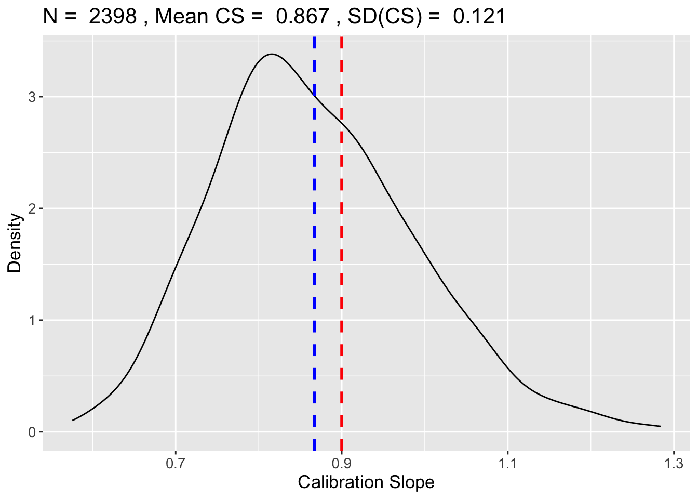
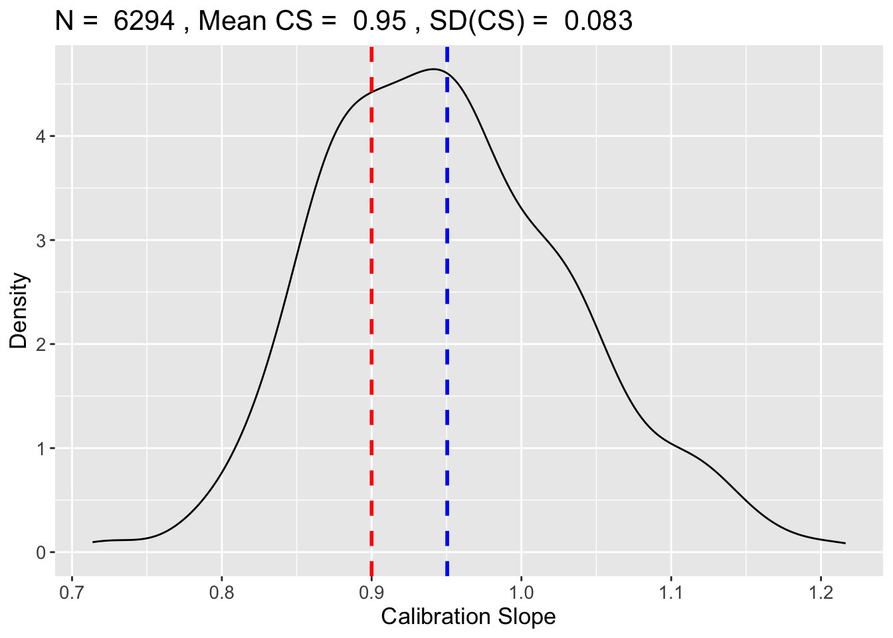
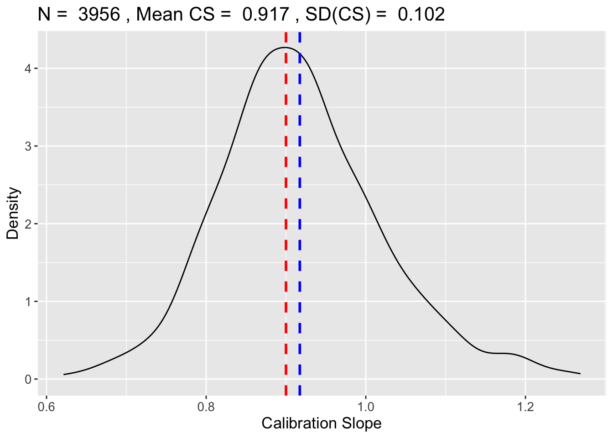
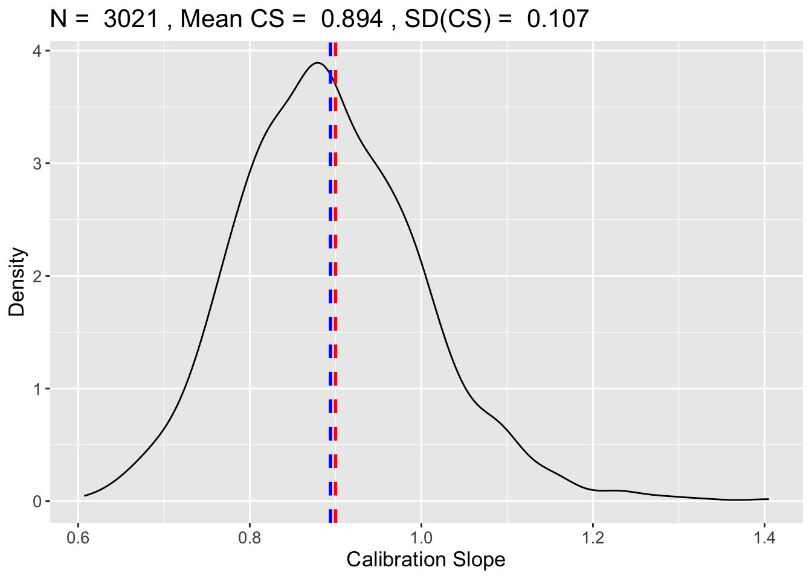
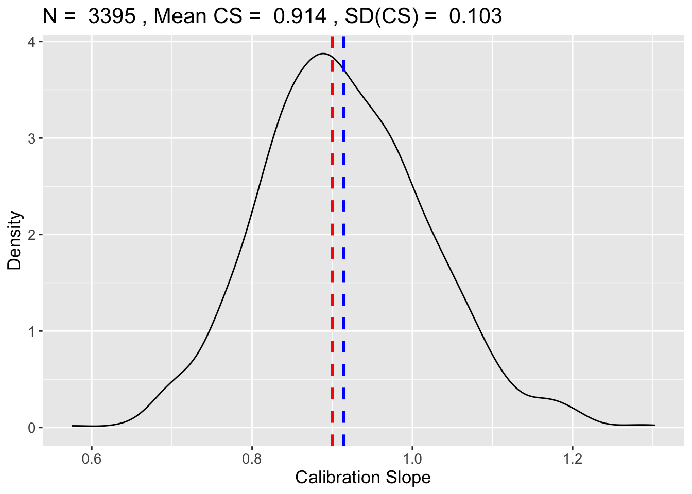
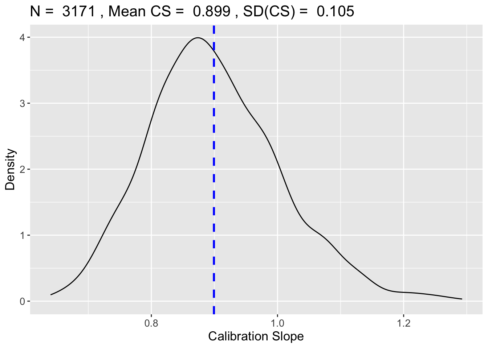
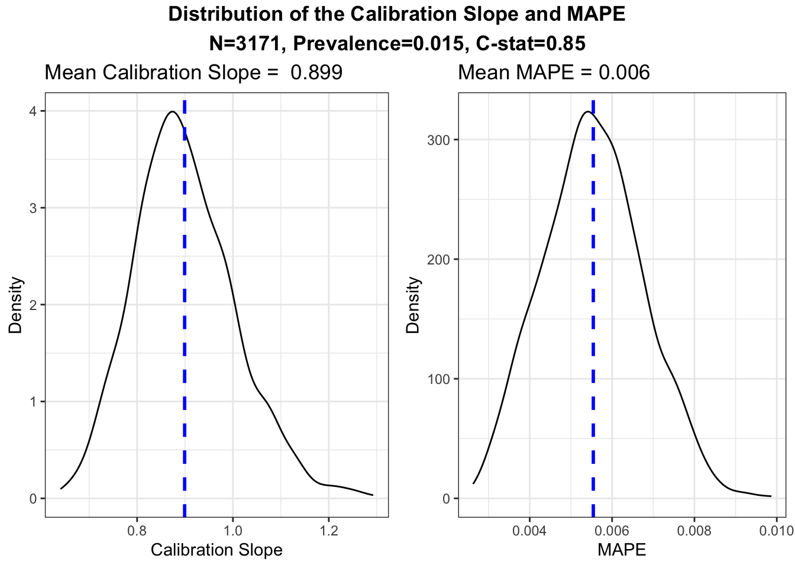

library(pmsampsize) # Riley et al.
library(samplesizedev) # Menelaos et al.Sample Size Calculations
Introduction
In this document, I simulate an approach to clinical risk prediction modelling that begins with sample size requirements, assumes a simple model, and then proceeds to assess options for internal validity. I begin with sample size requirements.
Sample Size Requirements
Here I consider two methods of deriving sample size requirements, respectively from Riley et al. (2020), and Pavlou et al. (2024). For each method of deriving sample size requirements, we need to supply the number of predictor parameters in the anticipated model, the overall prevalence of the outcome and the target discriminative skill or calibration level.
params <- 10
prev <- 0.015
c_stat <- 0.85
calib <- 0.9We can start by getting Riley et al.’s recommendations on sample size given these parameters:
pm_samp <- pmsampsize(type = "b",
cstatistic = c_stat,
parameters = params,
prevalence = prev)pm_samp$results_table Samp_size Shrinkage Parameter CS_Rsq Max_Rsq Nag_Rsq EPP
Criteria 1 2960 0.900 10 0.0299 0.144 0.207 4.44
Criteria 2 1361 0.806 10 0.0299 0.144 0.207 2.04
Criteria 3 23 0.900 10 0.0299 0.144 0.207 0.03
Final 2960 0.900 10 0.0299 0.144 0.207 4.44Riley’s recommendation in this scenario is 379, but we know from Pavlou (2024) that this is likely to be inadequate at this relatively high model strength. This paper recommends an increase of 50% in minimum sample size fo achieve a C-statistic of 0.85, and double the size for C=0.9.
(Parenthetically, Riley recommended a higher sample size of 547 at the lower C-statistic of 0.8. It would be good to understand why a smaller sample would be required for better discrimination. Pavlou et al. conclude that the Riley formula performs relatively well at lower strengths.)
Let’s retrieve the recommendation from Pavlou et al.
mp_samp <- samplesizedev(outcome = "Binary",
S = 0.9, # calibration slope
phi = prev,
c = c_stat,
p = params)[1] "Optimisation Starting, ~ 1 min left..."





mp_samp$sim[1] 3171The simulation here recommends a minimum sample size of 613 patients. At 15% prevalence this represents 92 events, and at 10 parameters is 9.2 EPP. This represents an increase of 61.6% in EPP compared with Riley.
Pavlou et al. provide expected performance statistics for the model given this set-up.
expected_performance(outcome = "Binary", n = 3171, phi = 0.015, c = 0.85, p = 10)
[,1]
n 3171.0000
True prevalence 0.0200
True c-statistic 0.8500
Number of predictors 10.0000
--------------------------- 0.0000
Mean_calibration_slope 0.8990
SD(CS) 0.1050
Pr(0.85<CS<1.15) 0.6600
Mean_MAPE 0.0055
SD(MAPE) 0.0012
Optimism_R2_Nag 0.0150
Mean_AUC 0.8400
SD(AUC) 0.0193
SD(Average Predicted Risk) 0.0020
Median CS 0.8880Hence we can expected to see a calibration slope of 0.901 from our model. This will help guide our assessment of internal validation.
Simulation Data
Let’s now generate some simulation data with a target prevalence of 1.5%, since this forms part of the sample size criteria above. To achieve 1.5% prevalence, we need:
\[ Pr(Y=1) = 0.015 \]
This is the marginal probability rather than the conditional on \(X\). Another way to express this is that the expectation of the dependent variable, \(Y\), should be 0.15:
\[ \mathbb{E}[Y] = 0.015 \]
We know that the dependent variable Y takes on values from the conditional distribution:
\[ Y|X \sim Bernoulli (p), \]
where \(p\) is the conditional probability of success, \(p=Pr(Y=1 | X)\). From the definition of the logit transformation,
\[ log(\frac{p}{1-p}) = \alpha + \beta X \]
we find p as the inverse-logit of the linear predictors
\[ p = logit^{-1} (\alpha + \beta X) = \frac{1}{1+e^{-(\alpha + \beta X)}}, \]
which we know is equal to the conditional expectation \(\mathbb{E}[Y|X]\). Since \(Pr(Y=1)=\mathbb{E}[Y]\), which in turn are equal to the expectation of the conditional probability of success, \(\mathbb{E} [Pr(Y=1 | X)]\), we can substitute the logit model to find:
\[ \mathbb{E} [ \frac{1}{1+e^{-(\alpha + \beta X)}} ] = 0.015, \]
where \(\beta\) is a vector of coefficients and \(X\) is a vector of predictor values.
Once we have chosen our values for \(\beta\), we need to solve for \(\alpha\) to find the value which guarantees the required level of prevalence, which we have chosen as 1.5%.
Finding \(\alpha\)
In a sample setting, we do not have an analytic distribution over which to take an expectation, so instead we can take a simple average, as
\[ \frac{1}{n} \sum_{i=1}^{n} (\frac{1}{1+e^{-(\alpha + \beta X)}}) = 0.015. \]
For the sake of simplicity let’s choose 10 continuous predictors drawn from the standard normal distribution, \(X_j \sim \mathcal{N} (0, 1)\). We’ll start with Pavlou et al.’s recommendation on sample size.
n <- 3171 # sample size (Pavlou's suggestion)Next we generate the predictors.
X <- replicate(params, rnorm(n)) # 613*10 matrix
colnames(X) <- paste0("x", 1:10)Set the beta coefficients including some zeroes.
beta <- c(1.1, 0.8, 0.6, 0.4, 0.7, 0.7, 0.7, 0, 0, 0.1)Solve for alpha so that logit(\(\eta\))) = prev. Technically, in R we’re solving the following for \(\alpha\):
\[ \frac{1}{n} \sum_{i=1}^{n} (\frac{1}{1 + e^{\alpha + \beta X}}) - 0.015 = 0 \]
inv_logit <- function(z) 1/(1+exp(-z))
find_alpha <- function(a) mean(inv_logit(a + as.vector(X %*% beta))) - prev
alpha <- uniroot(find_alpha, c(-10, 10))$root
print(alpha)[1] -5.888With \(\alpha = -2.7\) in hand, we can now generate probabilities and outcomes:
pi <- inv_logit(alpha + as.vector(X %*% beta))
y <- rbinom(n, 1, pi)
sum(y)/length(y)[1] 0.01545Fit logistic model and report simple diagnostics
dat <- as.data.frame(X)
dat$y <- y
m <- glm(y ~ ., data = dat, family = binomial())
m
Call: glm(formula = y ~ ., family = binomial(), data = dat)
Coefficients:
(Intercept) x1 x2 x3 x4 x5
-6.2045 0.9835 0.8201 0.6158 0.2720 0.9978
x6 x7 x8 x9 x10
0.8996 0.8114 -0.3786 -0.0842 0.1769
Degrees of Freedom: 3170 Total (i.e. Null); 3160 Residual
Null Deviance: 506
Residual Deviance: 340 AIC: 362Apparent calibration slope
lp <- predict(m, type = "link")
cal_slope <- coef(glm(y ~ lp, data = dat, family = binomial()))
cal_slope (Intercept) lp
-0.00000004747 0.99999997038 AUC
library(pROC)Type 'citation("pROC")' for a citation.
Attaching package: 'pROC'The following objects are masked from 'package:stats':
cov, smooth, varauc_val <- as.numeric(auc(roc(y, predict(m, type="response"), quiet=TRUE)))
list(realized_prevalence = mean(y), alpha = alpha, calibration_slope_app = cal_slope , AUC_app = auc_val )$realized_prevalence
[1] 0.01545
$alpha
[1] -5.888
$calibration_slope_app
(Intercept) lp
-0.00000004747 0.99999997038
$AUC_app
[1] 0.9091